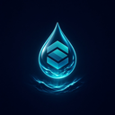

Live mint radar
Detect new pools and mints the moment they surface.

Float SolFloat Sol
A Solana utility for finding new coins, following whale wallets, and catching calls before the noise.
01 — Discovery
Watch fresh Solana launches appear in real time. Filter by liquidity, deployer history, and early flow so you see signal — not every splash.
Detect new pools and mints the moment they surface.
Snapshot risk from deployer history before you dive in.
See early concentration and smart money clustering.
02 — Whale Watch
Track large Solana wallets as they accumulate, exit, and rotate. Map influence without drowning in raw transaction noise.
03 — Calls
A primed schema of trusted sources — ranked by potential, linked by style. Who called, when, and what the chain did after.
TIER 01 · PRIME
In-house radar · Solana only
TIER 02
Whale-led entries · size confirmed
TIER 02
Theme rotations · catalysts
TIER 03
Fast in / out · tight windows
TIER 03
Multi-source echo · filtered
TIER 03
Short bursts · micro timing
TIER 03 · SPEC
Community heat · higher variance
TIER 03 · SPEC
Deep noise · lottery range
04 — Ecosystem
Not another dashboard wall. Float Sol is a focused toolkit — discovery, whales, and calls — built to stay readable when the market is loud.
Surface new pairs and early momentum without tab-switching chaos.
Whale flow maps that show where size is actually drifting.
Call intelligence with on-chain aftermath, not hype alone.
Quiet tooling for operators who prefer clarity over clutter.